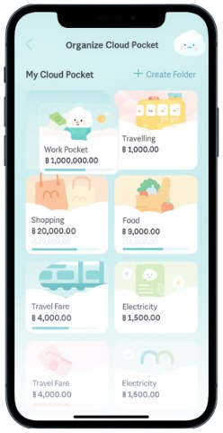
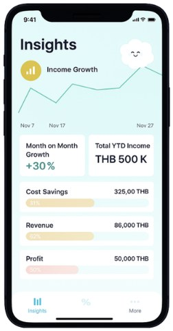
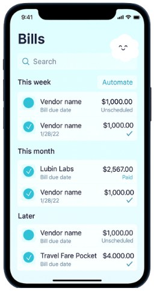

MAKE is a next-generation banking app that organizes money around life goals instead of traditional accounts. I worked on product concepts for the Work Pocket, designed to help entrepreneurs manage revenue, vendor payments, and operating expenses within their personal finances.
Timeline
Jun–Aug 2025
Team
4 designers, 6 engineers
Role
UX Researcher
MSME Credit plays
2.1 Deep-dive (MSME) | “Work” pocket enables MSMEs to easily organize cashflow and automate expenses without having a separate business account
Integration into current user flow

“Work Pocket” integrated inside current Cloud Pocket user flow; no need for separate account
MSME-tailored features in our solution, embedded in “Work” pocket

“Insights” Dashboard enabling at-a-glance income tracking

“Expenses” list to track and automate vendor and staff payments
Leverage MEOWJot’s smart categorization to sort business vs personal expenses